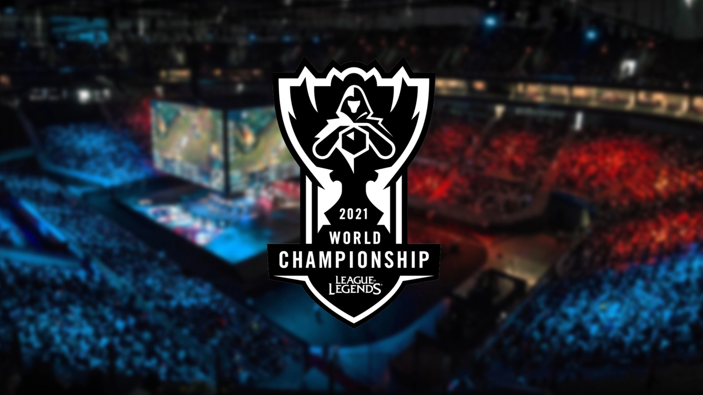
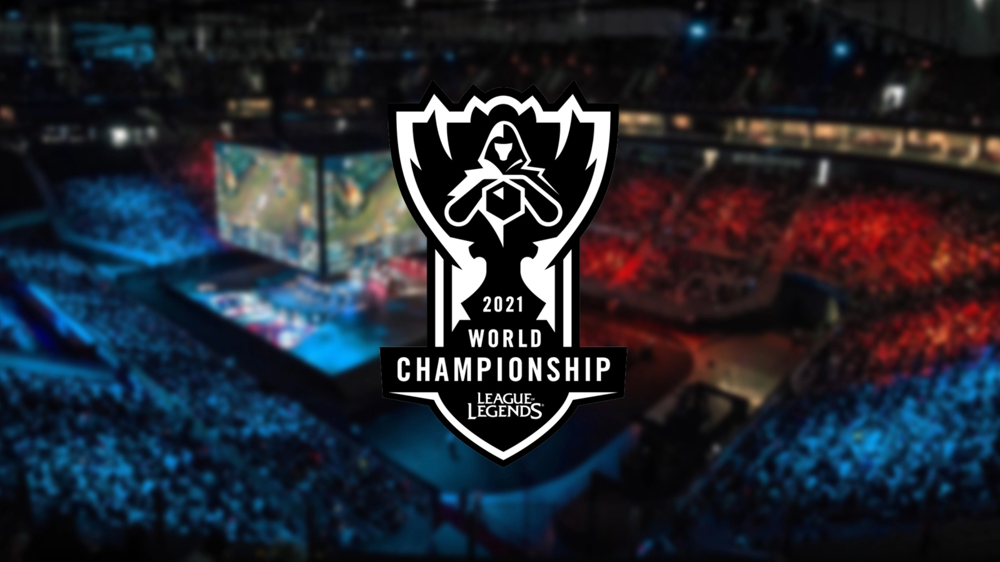
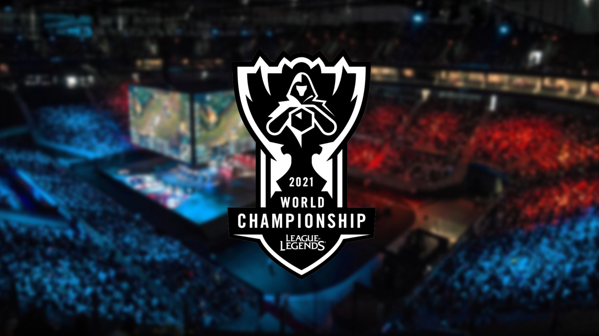

Tout d'abord, le premier grand événement de cette année 2021 était le Msi 2021, une compétition mondiale de l'intersaison de LOL, qui sera gagnée par RNG, une équipe chinoise. Ensuite, les European Masters, compétition regroupant les meilleurs équipe européennes est gagnée par la Kcorp, équipe française qui a aussi gagner la LFL, ligue française. Cette équipe va aussi gagner une deuxième fois les EUM, ce qui est un record pour une équipe européenne. Enfin, le plus gros rendez-vous e-sportif de l'année 2021 fut les Worlds, les championnats du monde de LoL, gagnée par EDG, une équipe chinoise après 1 mois de journée de game. Cette année fut prolifique sur League Of Legends, le jeu est regardé par des millions de personnes, par exemple, cette finale des Worlds a regroupé 1.5M de viewers.

Quelques événements ont marqué cette fin d'année sur LoL : l'achât de Martin "Rekkles" Larrson, le plus grand ADC (rôle dans le jeu) d'Europe par Karmine Corp, une équipe française. Cet achat sera énormément relayé car personne ne s'y attendait.

Il y a eu aussi les showmatch entre la France et l'Espagne qui ont également marqué cette année 2021 mais remporté par l'Espagne, a deux reprises